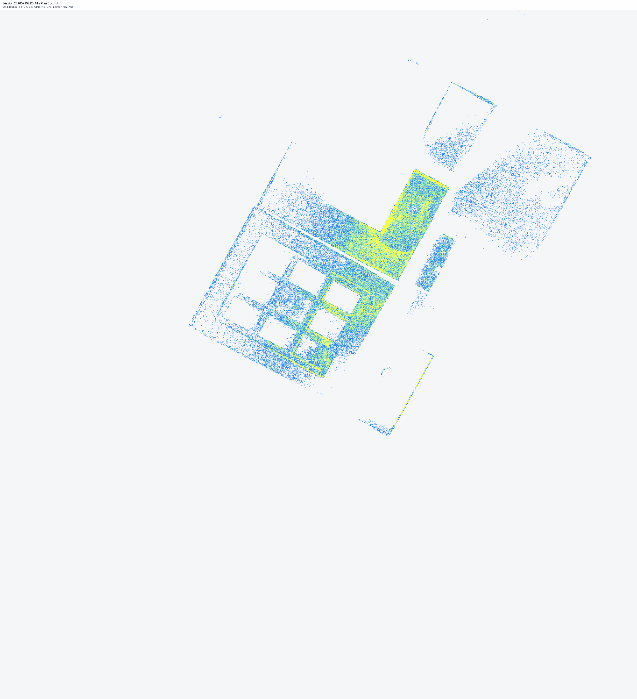

Report 04 · bounded analytical evidence
Core geometry evidence
Full-source statistics and client-safe analytical controls without publishing detailed source bounds.
Source points91.69MBounded processing
Full-source figures25Generated
Trial slices9Three purposes
Zero-point trials2Upper bands
Method boundary: analytical views preserve native coordinates and do not apply alignment transforms. Candidate floor references, slice heights, and candidate metre units remain controls pending reconciliation.
Trial plan-control evidence

